01
Création de piscines
Piscines extérieures, intérieures ou collectives : réalisation des réseaux hydrauliques et électriques, pièces à sceller, local technique, étanchéité et raccordement des équipements.
Parler du projet ↗Création, rénovation, équipements et entretien : une équipe de techniciens spécialisés vous accompagne sur l’ensemble de votre installation.
Implantée à Châteaugay depuis 2007, Piscines Techni Services accompagne particuliers, professionnels et collectivités pour la création, la rénovation et l’équipement de bassins.
De l’hydraulique à l’électricité, du local technique au revêtement, l’équipe intervient sur les éléments essentiels qui font la fiabilité et le confort d’une piscine au quotidien.
Projet neuf, rénovation ou entretien : chaque intervention commence par la compréhension de votre installation et de votre usage.
Piscines extérieures, intérieures ou collectives : réalisation des réseaux hydrauliques et électriques, pièces à sceller, local technique, étanchéité et raccordement des équipements.
Parler du projet ↗Remplacement de liner ou PVC armé, modification de dimensions ou profondeur, escaliers et reprise des pièces à sceller.
Découvrir ↗Couvertures de sécurité, chauffage, traitement automatique de l’eau, robots, accessoires et équipements périphériques.
Voir les solutions ↗SAV toutes marques, détection de fuites sur liner, mise en pression de tuyauteries, révision de pompe, analyse de l’eau, mise en route et hivernage.
Besoin d’un diagnostic ? ↗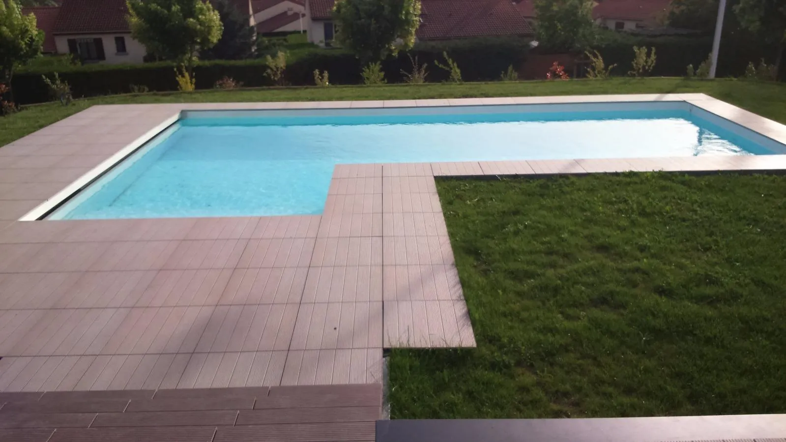
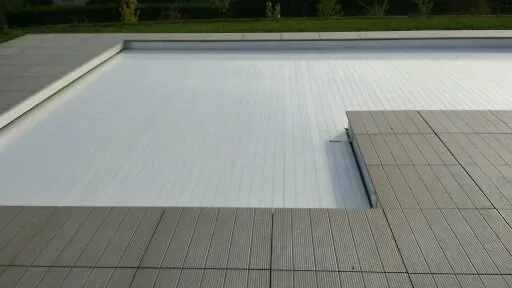
Un revêtement fatigué, un local technique mal organisé ou un bassin qui ne correspond plus à vos usages ? La rénovation permet d’intervenir précisément là où cela compte.
Remplacement de liner ou pose de PVC armé selon les besoins du bassin.
Modification des dimensions, de la profondeur ou création d’escaliers.
Reprise hydraulique, remise aux normes électriques, filtration, optimisation ou déplacement du local.
Bâches à barres, volets automatiques hors-sol ou immergés, couvertures d’hiver, bâches à bulles et filets.
Pompes à chaleur, échangeurs et réchauffeurs : des solutions sélectionnées selon le bassin et votre utilisation.
Électrolyse au sel, régulation automatique du chlore et du pH pour faciliter le maintien d’une eau équilibrée.
Robots électriques de nettoyage, nage à contre-courant, échelles, rampes d’accès et autres équipements complémentaires.
Quelques réalisations présentées par Piscines Techni Services : piscines privées, équipements et bassins collectifs.
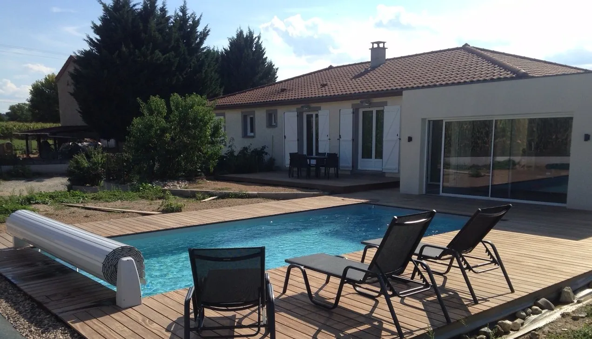
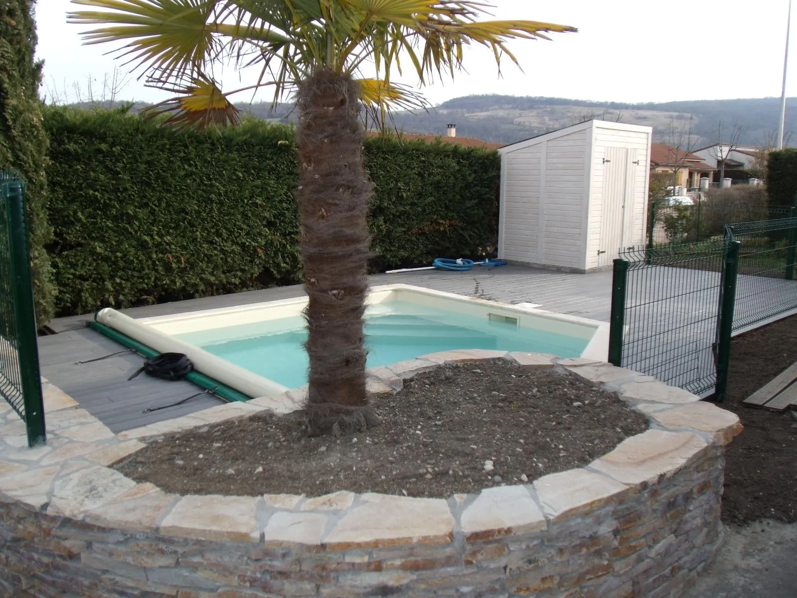
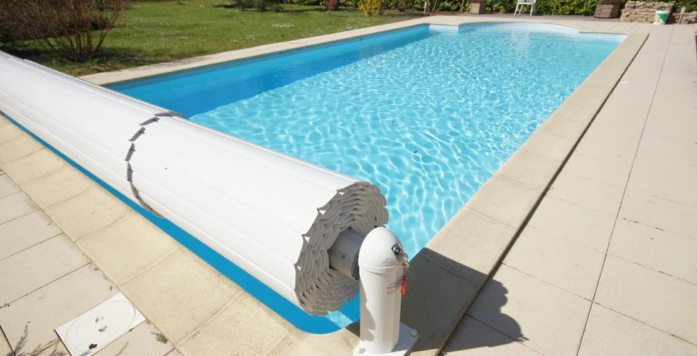
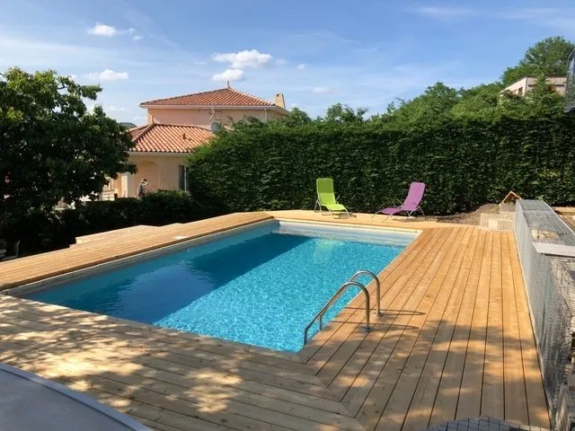
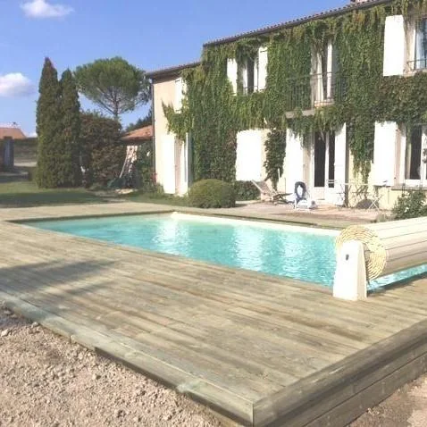
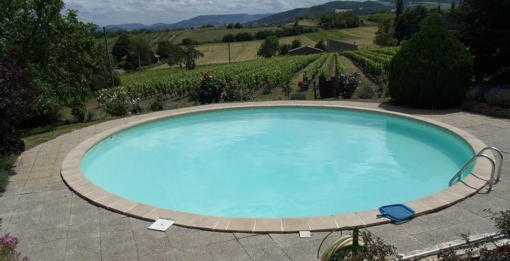
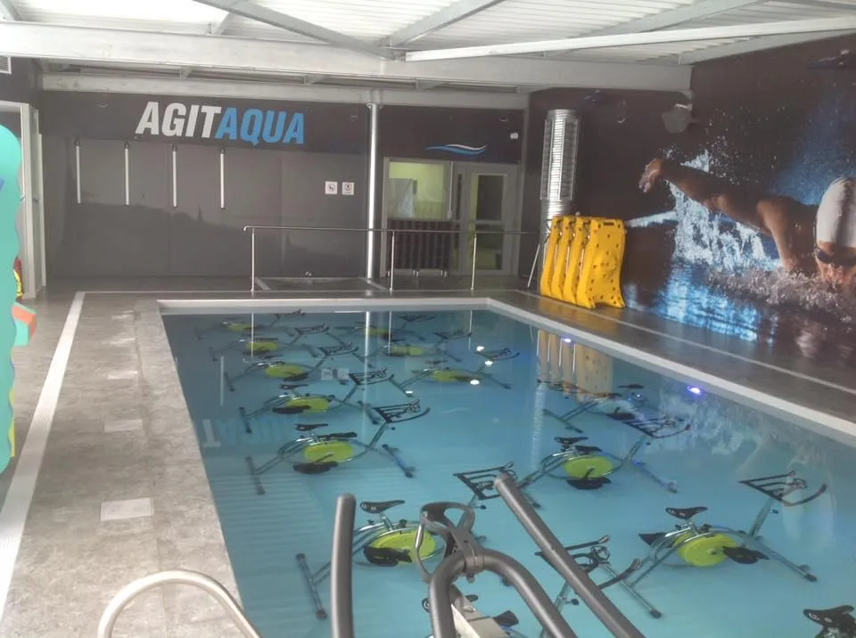
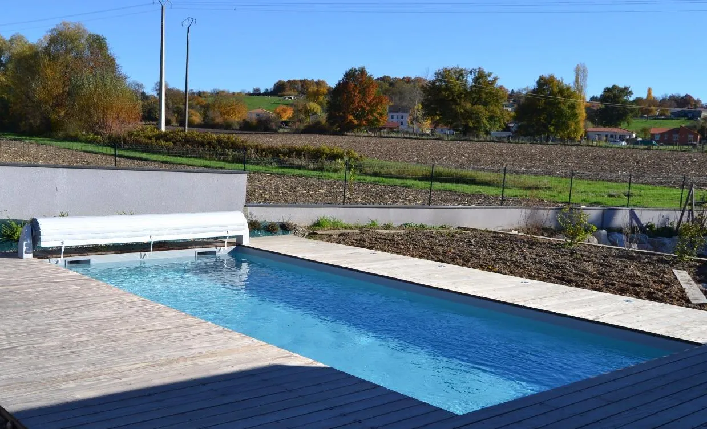
Les clients mettent régulièrement en avant le professionnalisme, la disponibilité, la qualité des conseils et la transparence de l’équipe.
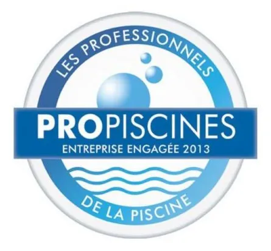
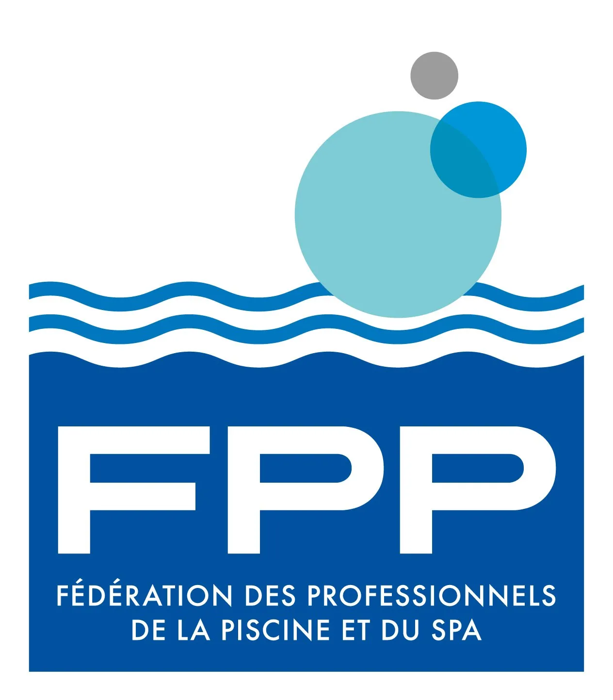
Quelques réponses utiles avant de nous contacter.
Piscines Techni Services est basée à Châteaugay, près de Clermont-Ferrand, et intervient dans tout le département du Puy-de-Dôme pour la création, la rénovation et la pose d’équipements de piscine.
L’entreprise ne réalise pas directement les travaux de terrassement et de maçonnerie. Elle peut collaborer avec le maçon ou l’architecte de votre choix, ou travailler avec vous sur la partie piscine : réseaux, pièces à sceller, local technique, étanchéité et équipements.
Oui. Les interventions peuvent concerner le revêtement, les pièces à sceller, les dimensions ou la profondeur du bassin, la création d’escaliers, mais aussi la reprise ou le déplacement du local technique.
Oui. L’entreprise indique assurer le SAV toutes marques, différents diagnostics et dépannages, la révision de pompes de filtration, la mise en pression des tuyauteries, ainsi que la fourniture et l’installation de nombreux équipements.
Oui. La mise en route, l’hivernage, l’analyse de l’eau et l’entretien pendant votre absence font partie des services proposés.
L’entreprise intervient sur des piscines privées extérieures ou intérieures et sur des bassins collectifs à usage public, notamment pour des professionnels ou collectivités.
Création, rénovation, équipement ou dépannage : contactez directement l’équipe pour expliquer votre besoin.
Lun–Ven · 08:00–12:00
14:00–17:00
Lun–Ven · 08:00–12:00 / 14:00–18:00
Sam · 09:00–12:00